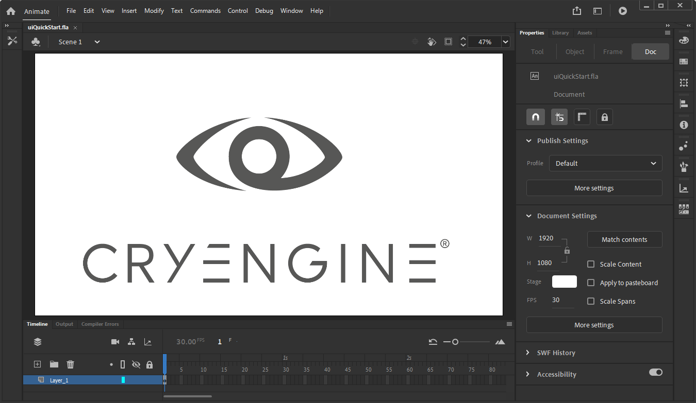

Overview
The Scaleform integration in CRYENGINE is a flexible and performant solution that uses the Autodesk Scaleform technology to provide tools and capabilities to render functional user interfaces for your projects.
Since the release of CRYENGINE 5.7 LTS, the implementation provides support for Scaleform 3 and Scaleform 4. The inclusion of Scaleform 3 is meant as a fall back for users relying on functionality that is possibly changed in Scaleform 4, so that they can continue to develop their projects without hindrance.
Scaleform 4 supports Actionscript 2.0, as well as Actionscript 3.0. This means that you can use any Adobe Flash or animation software that supports either ActionScript 2.0 or 3.0 to create your Scaleform GFX assets. Although the workflow has remain unchanged, there are differences with regards to the tools that now exist and other technical elements that warrant the separation of Scaleform 3 and Scaleform 4 asset creation.

Adobe Animate
Goals
The focus of this tutorial is to get you started on using the Scaleform 3 and/or 4 implementations that ship with CRYENGINE V.
- Where applicable, instructions for Scaleform 3 and 4 have been provided separately in each of the chapters.
- When following this tutorial for Scaleform 3, it is recommended to use CRYENGINE versions between 5.0 and 5.6.7. and Adobe Flash CS6.
- The Scaleform 4 aspects of this tutorial meanwhile are recommended for CRYENGINE version 5.7 LTS. You also need to enable Scaleform 4 for your Engine build; see Enabling Scaleform 4 for Projects and Custom Engine Builds for more information.
You will also be doing parts of XML and visual scripting in this tutorial to achieve basic functionality; with regards to visual scripting, you can choose between the instructions provided for Flow Graph and Schematyc (Experimental) in the relevant chapters. It is however not recommended to mix the Flow Graph and Schematyc (Experimental) approaches as this can lead to issues that are hard to resolve.
You will also learn how to:
- Create a new Flash project for Scaleform usage.
- Convert SWF files to GFx files.
- Generate the required DDS images.
- Expose UI functions and events to Visual Scripting.
- Call and handle UI functions in Flow Graph.
- Test your UI in-game.
Prerequisites
This tutorial provides instructions for both Scaleform 3 and 4, and assumes you have prior knowledge of the following topics:
Additionally, for applying UI elements to an in-game mesh, we recommend watching Tutorial - How to apply Scaleform UI to a game object.
In This Section
- Chapter 1 - UI Scene Setup
- Chapter 2 - Flash and Gfx
- Chapter 3 - UI Elements
- Chapter 4 - Exposing a Function from Flash
- Chapter 5 - Exposing an Event from Flash
- Chapter 6 - Font Embedding
- Chapter 7 - Using the Exposed Function
- Chapter 8 - Using the Exposed Event